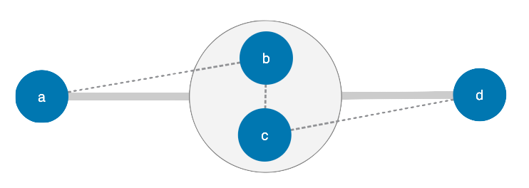
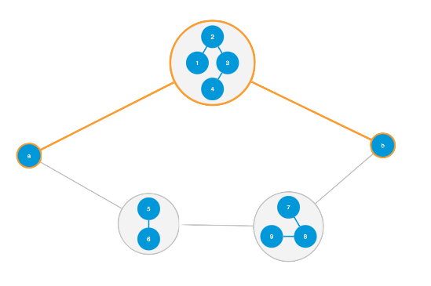
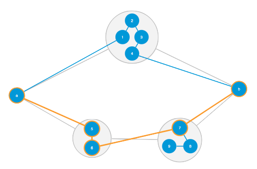
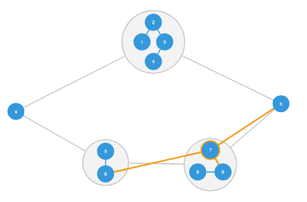

Combos Concepts
Introduction#
This page discusses the key concepts behind the combos feature in Nexus 4.0 or later. The design for combos is different to other Nexus features, so understanding what’s happening under the hood will help you get to grips with the feature more quickly.
This page isn’t an introduction to what you can do with combos. The Combos page covers that, so we recommend you read that first.
Two different approaches to data#
One of the most important concepts to understand when working with combos is the difference between a ‘top level’ and an ‘underlying level’ approach to the data. The approach you take depends on what kind of data you’re visualising. For example, look at this network. Nodes b and c are children of a parent combo:

To identify the shortest path between nodes a and d, you have two options:
- ignore the combo parent and take the links between the child nodes, b and c, into account. This is the underlying level approach.
- treat the combo parent as a single entity and ignore the links between the child nodes b and c. This is the top level approach.
Let’s consider these options in more detail.
Underlying level approach#
The underlying level approach ignores combos - we only consider nodes and links that are not combos. In other words, items in the underlying level cannot be parents.
The underlying level approach makes the most sense if you’re using combos to visually group items in your data, but where the combos themselves are not really considered to be ‘nodes’ from a data point of view. For example, consider a dataset of people who have been grouped into combos representing their country of birth. The combos are a visual grouping, but they don’t have the same significance as the people. When you want to know who is connected to whom, you want the answer to include people only, not countries.
Top level approach#
The top level approach ignores anything that is inside a combo. In other words, items in the top level cannot be children.
The top level approach is useful where you’re using combos to replace the nodes they contain. For example, a crime investigator might speculate that two nodes representing cars, one from a crime scene and another from a witness statement, actually represent the same car. The investigator might use a combo to group the two cars together, and treat it as a single entity. The combo exists in the ‘top level’ chart, and it makes sense to ask questions like “what entities are directly connected to this combo?”.
The underlying and the top level approaches are not mutually exclusive. An item can exist in both underlying and top levels, and there may be items which exist in neither. But in the majority of cases, the graph traversals you’ll need to do can be done in one of the two levels. You just need to decide which one is the most relevant to your data.
Let’s explore some of the most common scenarios where you need to consider which approach to use.
Iterating over items#
At some point, you’ll need to iterate over items in the chart. The easiest way to do this is using chart.each().
In Nexus v4.0 and later, chart.each() iterates over the underlying level. This is by far the most common iteration use case, but you can change it using the items option.
If you want to iterate over the top level chart, use items: ‘toplevel’:
chart.each({ items: 'toplevel' }, function (item) { // Top level nodes, links and combos are available here });
If you want to iterate over all items in the chart, use items: ‘all’:
chart.each({ items: 'all' }, function (item) { // Every node, link and combo in the chart is available here });
Controlling which items are visible#
Filtering and foregrounding items#
The chart.filter() and chart.foreground() functions iterate over items in the chart so that you can apply your own business logic to decide whether that item should be visible, backgrounded or hidden. You need to decide whether to iterate over all underlying level items, or just the top level items.
From Nexus 4.0 and later, the default behaviour of these functions is to iterate over underlying level items, but again you can change this using their respective items options.
The following rules apply:
- If any item inside a combo is foregrounded, so is that combo.
- If any item inside a combo is shown, so is that combo.
These rules mean that it almost always makes sense to use filter or foreground at the underlying level. You decide whether your underlying nodes should be visible or not, and the rules above will take care of the parent combos.
However, if you want to override these rules, you can explicitly set the visibility properties of items by foregrounding open combos or hiding/showing items. Let’s look at these more closely.
Foregrounding open combos#
There may be times when you filter and foreground items, but want to send open combos to the background even if they contain children that are in the foreground. For example, when you think that an open combo is distracting attention from the important items highlighted inside it. To do this, set the foregroundOpenCombos option in chart.foreground() to false:
chart.foreground(function (node) { // Decide whether to foreground an underlying node }, { foregroundOpenCombos: false }).then(() => { // do more after foreground });
Hiding and showing items#
Another way to control visibility is to pass a set of ids to the chart.hide() or chart.show() functions. You can pass the ids of any item. Calling show on a combo will also show the items inside it. Calling show on an item inside a hidden combo or a nest of combos will show that item and its parent(s).
Although it’s safer to rely on functions like filter and foreground, you can have complete control over visibility using chart.setProperties, and setting the bg (background) or hi (hidden) property on any item.
Note that if you set hi: true on a combo, its children will always be hidden, even though their hi property may still be false.
Running graph analysis#
There are two ways to run graph analysis functions such as neighbours, shortest paths, and centrality measures:
- Using the chart.graph() namespace, which runs analysis directly on your chart.
- Creating an instance of the Nexus graph engine, using GraphNexus.getGraphEngine() and loading any data you want.
The important thing to understand is that the chart.graph() namespace only considers the top level chart. This is useful if you’re performing graph traversals or running SNA computations and want to take combo nodes into account but ignore the nodes inside them.
Sometimes, particularly when calculating neighbours or centrality measures, it makes more sense to run graph analysis against the underlying level. To do this, you need to build a separate graph engine and load in the underlying data:
var graphEngine = GraphNexus.getGraphEngine(); graphEngine.load(chart.serialize());
Note that combos and the items inside them are serialized in a different section of the chart object, so using chart.serialize() as the source of data for your graph engine will only bring in the underlying nodes and links.
So which approach makes the most sense for your application?
To answer this, you need to decide whether the combos themselves should be considered part of the data when running analysis. If the answer is no, you should use the underlying level approach. Let's look at some examples.Example 1: Finding shortest paths#
In the chart below, we're treating the combos as single entities to find the shortest path between nodes a and b:

If we want to take nodes inside combos into account, we'd run shortest path analysis against an instance of the graph engine:
graphEngine.shortestPaths('a', 'b');
Which gives us very different results:

Example 2: Revealing links to neighbours#
One of the most common graph analysis calls at the underlying level is to ask for the direct neighbours of a node.
You can use this with combo.reveal() to reveal the links in the underlying level that connect a selected node to its direct neighbours:
var neighbours = graphEngine.neighbours('7'); chart.combo().reveal(neighbours.links);
